- Introduction
- 1. Chapter 2. Statistical Learning
- 2. Chapter 3. Linear Regression
- 3. Chapter 4. Classification
- 4. Chapter 5. Resampling Methods
- 5. Chapter 6. Linear Model Selection and Regularization
- 6. Chapter 7. Moving Beyond Linearity
- 7. Chapter 8. Tree-Based Methods
- 8. Chapter 9. Support Vector Machines
- 9. Chapter 10. Unsupervised Learning
- 10. References
- Published with GitBook
10.4 Lab 1: Principal Components Analysis
We use the USArrests dataset in this exercise to run Principal Component Analysis (PCA). We start by examining the data with some descriptive statistics.
states <- row.names(USArrests)
states
## [1] "Alabama" "Alaska" "Arizona" "Arkansas"
## [5] "California" "Colorado" "Connecticut" "Delaware"
## [9] "Florida" "Georgia" "Hawaii" "Idaho"
## [13] "Illinois" "Indiana" "Iowa" "Kansas"
## [17] "Kentucky" "Louisiana" "Maine" "Maryland"
## [21] "Massachusetts" "Michigan" "Minnesota" "Mississippi"
## [25] "Missouri" "Montana" "Nebraska" "Nevada"
## [29] "New Hampshire" "New Jersey" "New Mexico" "New York"
## [33] "North Carolina" "North Dakota" "Ohio" "Oklahoma"
## [37] "Oregon" "Pennsylvania" "Rhode Island" "South Carolina"
## [41] "South Dakota" "Tennessee" "Texas" "Utah"
## [45] "Vermont" "Virginia" "Washington" "West Virginia"
## [49] "Wisconsin" "Wyoming"
names(USArrests)
## [1] "Murder" "Assault" "UrbanPop" "Rape"
Let's check the mean and variance of the USArrests dataset.
apply(USArrests, 2, mean)
## Murder Assault UrbanPop Rape
## 7.788 170.760 65.540 21.232
apply(USArrests, 2, var)
## Murder Assault UrbanPop Rape
## 18.97047 6945.16571 209.51878 87.72916
We run PCA on our dataset using the prcomp() function.
pr.out <- prcomp(USArrests, scale = TRUE)
Now lets examing the results from The prcomp() function.
names(pr.out)
## [1] "sdev" "rotation" "center" "scale" "x"
The center and scale components contain the mean and standard deviations prior to scaling.
pr.out$center
## Murder Assault UrbanPop Rape
## 7.788 170.760 65.540 21.232
pr.out$scale
## Murder Assault UrbanPop Rape
## 4.355510 83.337661 14.474763 9.366385
The rotation component correspondes to the rotation matrix whose columns contain the eigenvectors.
pr.out$rotation
## PC1 PC2 PC3 PC4
## Murder -0.5358995 0.4181809 -0.3412327 0.64922780
## Assault -0.5831836 0.1879856 -0.2681484 -0.74340748
## UrbanPop -0.2781909 -0.8728062 -0.3780158 0.13387773
## Rape -0.5434321 -0.1673186 0.8177779 0.08902432
Let's check the dimentions of x component which returns the rotated data.
dim(pr.out$x)
## [1] 50 4
We then plot the first two principal components using biplot().
biplot(pr.out, scale = 0)
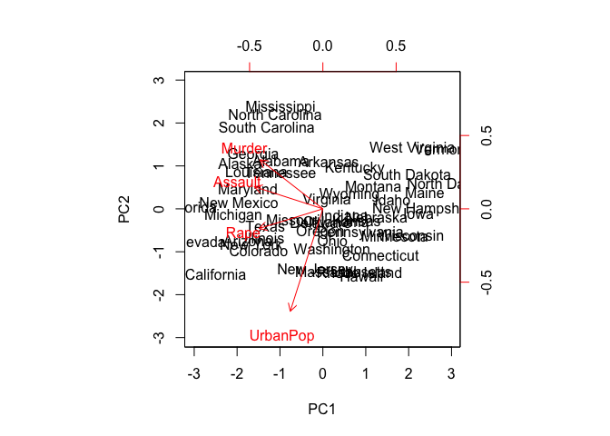
pr.out$rotation <- -pr.out$rotation
pr.out$x <- -pr.out$x
biplot(pr.out, scale = 0)

We can compute the variance associated with each principal component from the standard deviation returned by prcomp().
pr.out$sdev
## [1] 1.5748783 0.9948694 0.5971291 0.4164494
pr.var <- pr.out$sdev^2
pr.var
## [1] 2.4802416 0.9897652 0.3565632 0.1734301
Let's compute the proportional variance as well.
pve <- pr.var/sum(pr.var)
pve
## [1] 0.62006039 0.24744129 0.08914080 0.04335752
Now we can plot the proportional variance for each principal component.
plot(pve, xlab = "Principal Component", ylab = "Proportion of Variance Explained ", ylim = c(0, 1), type = "b")
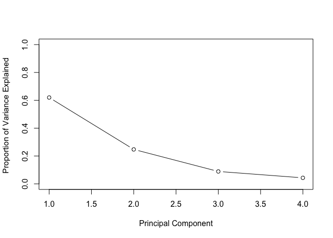
plot(cumsum(pve), xlab = "Principal Component ", ylab = " Cumulative Proportion of Variance Explained ", ylim = c(0, 1), type = "b")
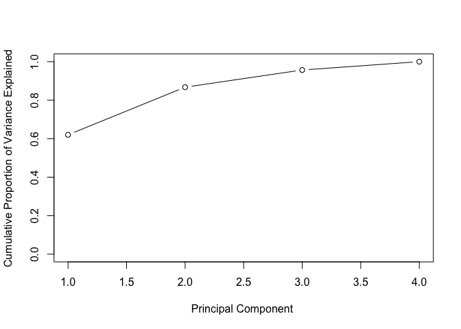
a <- c(1, 2, 8, -3)
cumsum(a)
## [1] 1 3 11 8
10.5 Lab 2: Clustering
10.5.1 K-Means Clustering
In this exercise we use K-Means clustering on randomly generated data using the kmeans() function.
set.seed(2)
x <- matrix(rnorm(50 * 2), ncol = 2)
x[1:25, 1] <- x[1:25, 1] + 3
x[1:25, 2] <- x[1:25, 2] - 4
Let's start by clustering the data into two clusters with K = 2.
km.out <- kmeans(x, 2, nstart = 20)
The kmeans() function returns the cluster assignments in the cluster component.
km.out$cluster
## [1] 2 2 2 2 2 2 2 2 2 2 2 2 2 2 2 2 2 2 2 2 2 2 2 2 2 1 1 1 1 1 1 1 1 1 1
## [36] 1 1 1 1 1 1 1 1 1 1 1 1 1 1 1
Now let's plot the clusters.
plot(x, col = (km.out$cluster + 1), main = "K-Means Clustering Results with K=2", xlab = "", ylab = "", pch = 20, cex = 2)
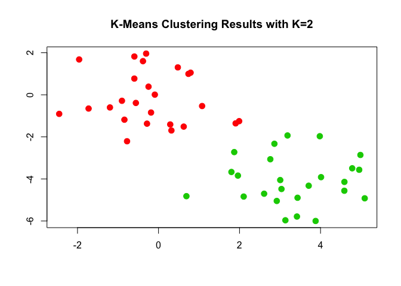
We can run K-means with different values for the number of clusters such as K = 3 and plot the results.
set.seed(4)
km.out <- kmeans(x, 3, nstart = 20)
km.out
## K-means clustering with 3 clusters of sizes 10, 23, 17
##
## Cluster means:
## [,1] [,2]
## 1 2.3001545 -2.69622023
## 2 -0.3820397 -0.08740753
## 3 3.7789567 -4.56200798
##
## Clustering vector:
## [1] 3 1 3 1 3 3 3 1 3 1 3 1 3 1 3 1 3 3 3 3 3 1 3 3 3 2 2 2 2 2 2 2 2 2 2
## [36] 2 2 2 2 2 2 2 2 1 2 1 2 2 2 2
##
## Within cluster sum of squares by cluster:
## [1] 19.56137 52.67700 25.74089
## (between_SS / total_SS = 79.3 %)
##
## Available components:
##
## [1] "cluster" "centers" "totss" "withinss"
## [5] "tot.withinss" "betweenss" "size" "iter"
## [9] "ifault"
plot(x, col = (km.out$cluster + 1), main = "K-Means Clustering Results with K=3", xlab = "", ylab = "", pch = 20, cex = 2)
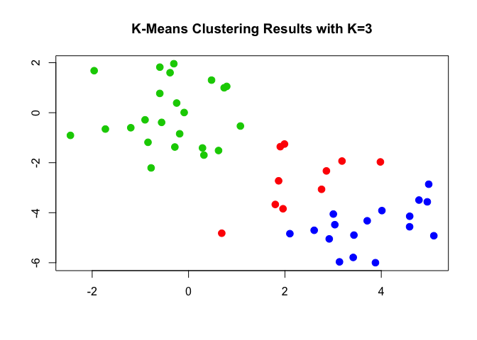
We can control the initial cluster assignments with the nstart argument to kmeans().
set.seed(3)
km.out <- kmeans(x, 3, nstart = 1)
km.out$tot.withinss
## [1] 104.3319
km.out <- kmeans(x, 3, nstart = 20)
km.out$tot.withinss
## [1] 97.97927
10.5.2 Hierarchical Clustering
We can use hierarchical clustering on the dataset we generated in the previous exercise using the hclust() function.
hc.complete <- hclust(dist(x), method = "complete")
The hclust() function supports various agglomeration methods including "single", "complete", and "average" linkages.
hc.average <- hclust(dist(x), method = "average")
hc.single <- hclust(dist(x), method = "single")
We can compare the different linkages by plotting the results obtained with different methods.
par(mfrow = c(1, 3))
plot(hc.complete, main = "Complete Linkage", xlab = "", sub = "", cex = 0.9)
plot(hc.average, main = "Average Linkage", xlab = "", sub = "", cex = 0.9)
plot(hc.single, main = "Single Linkage", xlab = "", sub = "", cex = 0.9)
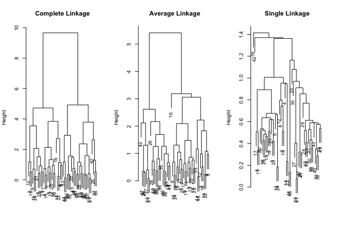
We can cut the tree into different groups using the cutree() function.
cutree(hc.complete, 2)
## [1] 1 1 1 1 1 1 1 1 1 1 1 1 1 1 1 1 1 1 1 1 1 1 1 1 1 2 2 2 2 2 2 2 2 2 2
## [36] 2 2 2 2 2 2 2 2 2 2 2 2 2 2 2
cutree(hc.average, 2)
## [1] 1 1 1 1 1 1 1 1 1 1 1 1 1 1 1 1 1 1 1 1 1 1 1 1 1 2 2 2 2 2 2 2 1 2 2
## [36] 2 2 2 2 2 2 2 2 1 2 1 2 2 2 2
cutree(hc.single, 2)
## [1] 1 1 1 1 1 1 1 1 1 1 1 1 1 1 1 2 1 1 1 1 1 1 1 1 1 1 1 1 1 1 1 1 1 1 1
## [36] 1 1 1 1 1 1 1 1 1 1 1 1 1 1 1
cutree(hc.single, 4)
## [1] 1 1 1 1 1 1 1 1 1 1 1 1 1 1 1 2 1 1 1 1 1 1 1 1 1 3 3 3 3 3 3 3 3 3 3
## [36] 3 3 3 3 3 3 4 3 3 3 3 3 3 3 3
We can scale the dataset before it to the clustering algorithm by first calling scale().
xsc <- scale(x)
plot(hclust(dist(xsc), method = "complete"), main = "Hierarchical Clustering with Scaled Features ")
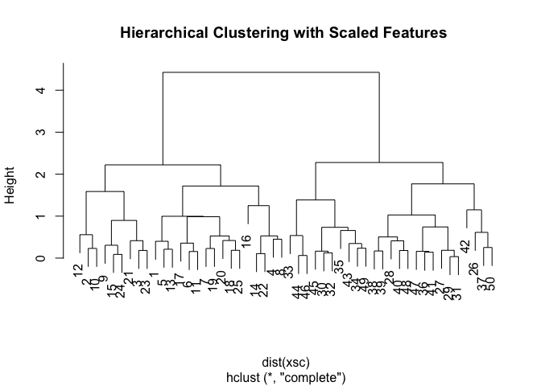
x <- matrix(rnorm(30 * 3), ncol = 3)
dd <- as.dist(1 - cor(t(x)))
plot(hclust(dd, method = "complete"), main = "Complete Linkage with Correlation -Based Distance", xlab = "", sub = "")
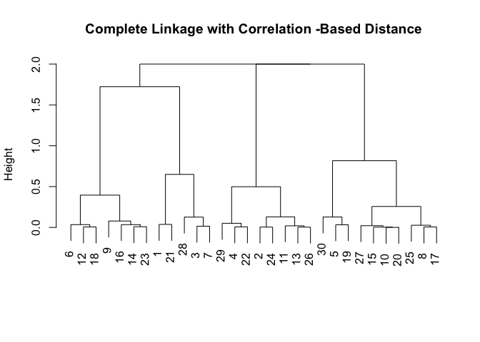
10.6 Lab 3: NCI60 Data Example
In this exercise, we apply PCA and clustering algorithms to the gene expression dataset from the Stanford NC160 Cancer Microarray Project.
library(ISLR)
nci.labs <- NCI60$labs
nci.data <- NCI60$data
Let's examine the dimensions of the dataset.
dim(nci.data)
## [1] 64 6830
The table() function can be used to produce crosstabs from the dataset.
nci.labs[1:4]
## [1] "CNS" "CNS" "CNS" "RENAL"
table(nci.labs)
## nci.labs
## BREAST CNS COLON K562A-repro K562B-repro LEUKEMIA
## 7 5 7 1 1 6
## MCF7A-repro MCF7D-repro MELANOMA NSCLC OVARIAN PROSTATE
## 1 1 8 9 6 2
## RENAL UNKNOWN
## 9 1
10.6.1 PCA on the NCI60 Data
We use prcomp() to run principal component analysis as shown in the PCA exercise above.
pr.out <- prcomp(nci.data, scale = TRUE)
We create a function to assign unique colors to each cancer type.
Cols <- function(vec) {
cols <- rainbow(length(unique(vec)))
return(cols[as.numeric(as.factor(vec))])
}
We can now use our Cols() function to plot the PCA results.
par(mfrow = c(1, 2))
plot(pr.out$x[, 1:2], col = Cols(nci.labs), pch = 19, xlab = "Z1", ylab = "Z2")
plot(pr.out$x[, c(1, 3)], col = Cols(nci.labs), pch = 19, xlab = "Z1", ylab = "Z3")
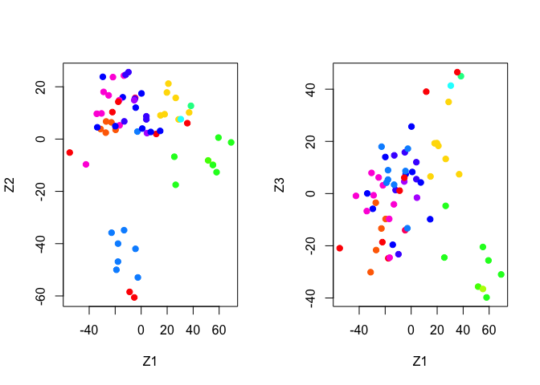
We can get a summary of the proportional variance and plot the variance explained by each principal component.
summary(pr.out)
## Importance of components:
## PC1 PC2 PC3 PC4 PC5
## Standard deviation 27.8535 21.48136 19.82046 17.03256 15.97181
## Proportion of Variance 0.1136 0.06756 0.05752 0.04248 0.03735
## Cumulative Proportion 0.1136 0.18115 0.23867 0.28115 0.31850
## PC6 PC7 PC8 PC9 PC10
## Standard deviation 15.72108 14.47145 13.54427 13.14400 12.73860
## Proportion of Variance 0.03619 0.03066 0.02686 0.02529 0.02376
## Cumulative Proportion 0.35468 0.38534 0.41220 0.43750 0.46126
## PC11 PC12 PC13 PC14 PC15
## Standard deviation 12.68672 12.15769 11.83019 11.62554 11.43779
## Proportion of Variance 0.02357 0.02164 0.02049 0.01979 0.01915
## Cumulative Proportion 0.48482 0.50646 0.52695 0.54674 0.56590
## PC16 PC17 PC18 PC19 PC20
## Standard deviation 11.00051 10.65666 10.48880 10.43518 10.3219
## Proportion of Variance 0.01772 0.01663 0.01611 0.01594 0.0156
## Cumulative Proportion 0.58361 0.60024 0.61635 0.63229 0.6479
## PC21 PC22 PC23 PC24 PC25 PC26
## Standard deviation 10.14608 10.0544 9.90265 9.64766 9.50764 9.33253
## Proportion of Variance 0.01507 0.0148 0.01436 0.01363 0.01324 0.01275
## Cumulative Proportion 0.66296 0.6778 0.69212 0.70575 0.71899 0.73174
## PC27 PC28 PC29 PC30 PC31 PC32
## Standard deviation 9.27320 9.0900 8.98117 8.75003 8.59962 8.44738
## Proportion of Variance 0.01259 0.0121 0.01181 0.01121 0.01083 0.01045
## Cumulative Proportion 0.74433 0.7564 0.76824 0.77945 0.79027 0.80072
## PC33 PC34 PC35 PC36 PC37 PC38
## Standard deviation 8.37305 8.21579 8.15731 7.97465 7.90446 7.82127
## Proportion of Variance 0.01026 0.00988 0.00974 0.00931 0.00915 0.00896
## Cumulative Proportion 0.81099 0.82087 0.83061 0.83992 0.84907 0.85803
## PC39 PC40 PC41 PC42 PC43 PC44
## Standard deviation 7.72156 7.58603 7.45619 7.3444 7.10449 7.0131
## Proportion of Variance 0.00873 0.00843 0.00814 0.0079 0.00739 0.0072
## Cumulative Proportion 0.86676 0.87518 0.88332 0.8912 0.89861 0.9058
## PC45 PC46 PC47 PC48 PC49 PC50
## Standard deviation 6.95839 6.8663 6.80744 6.64763 6.61607 6.40793
## Proportion of Variance 0.00709 0.0069 0.00678 0.00647 0.00641 0.00601
## Cumulative Proportion 0.91290 0.9198 0.92659 0.93306 0.93947 0.94548
## PC51 PC52 PC53 PC54 PC55 PC56
## Standard deviation 6.21984 6.20326 6.06706 5.91805 5.91233 5.73539
## Proportion of Variance 0.00566 0.00563 0.00539 0.00513 0.00512 0.00482
## Cumulative Proportion 0.95114 0.95678 0.96216 0.96729 0.97241 0.97723
## PC57 PC58 PC59 PC60 PC61 PC62
## Standard deviation 5.47261 5.2921 5.02117 4.68398 4.17567 4.08212
## Proportion of Variance 0.00438 0.0041 0.00369 0.00321 0.00255 0.00244
## Cumulative Proportion 0.98161 0.9857 0.98940 0.99262 0.99517 0.99761
## PC63 PC64
## Standard deviation 4.04124 2.148e-14
## Proportion of Variance 0.00239 0.000e+00
## Cumulative Proportion 1.00000 1.000e+00
plot(pr.out)
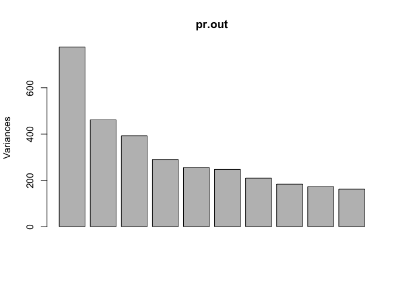
We can also plot the proportional variance explained (PVE) and the cummulative PVE for each principal component.
pve <- 100 * pr.out$sdev^2/sum(pr.out$sdev^2)
par(mfrow = c(1, 2))
plot(pve, type = "o", ylab = "PVE", xlab = "Principal Component", col = " blue ")
plot(cumsum(pve), type = "o", ylab = "Cumulative PVE", xlab = "Principal Component ", col = " brown3 ")
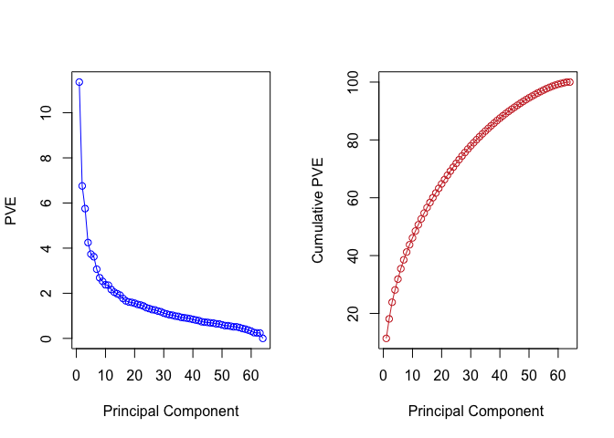
10.6.2 Clustering the Observations of the NCI60 Data
In this final exercise we use heirchical and K-means clustering on the NC160 dataset. We first scale the data to have a zero mean and standard deviation of one.
sd.data <- scale(nci.data)
We run heirchical clustering with different linakges and plot the results.
par(mfrow = c(1, 3))
data.dist <- dist(sd.data)
plot(hclust(data.dist), labels = nci.labs, main = "Complete Linkage", xlab = "", sub = "", ylab = "")
plot(hclust(data.dist, method = "average"), labels = nci.labs, main = "Average Linkage", xlab = "", sub = "", ylab = "")
plot(hclust(data.dist, method = "single"), labels = nci.labs, main = "Single Linkage", xlab = "", sub = "", ylab = "")
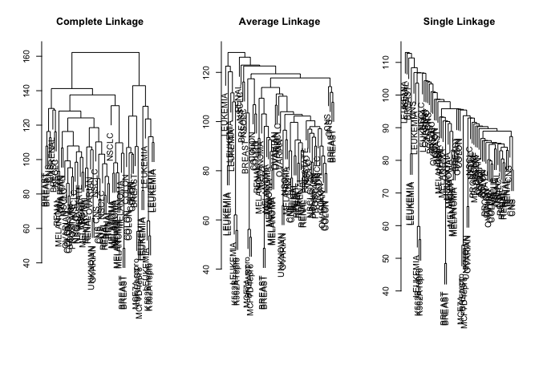
We cut the tree to give us four clusters using cutree().
hc.out <- hclust(dist(sd.data))
hc.clusters <- cutree(hc.out, 4)
table(hc.clusters, nci.labs)
## nci.labs
## hc.clusters BREAST CNS COLON K562A-repro K562B-repro LEUKEMIA MCF7A-repro
## 1 2 3 2 0 0 0 0
## 2 3 2 0 0 0 0 0
## 3 0 0 0 1 1 6 0
## 4 2 0 5 0 0 0 1
## nci.labs
## hc.clusters MCF7D-repro MELANOMA NSCLC OVARIAN PROSTATE RENAL UNKNOWN
## 1 0 8 8 6 2 8 1
## 2 0 0 1 0 0 1 0
## 3 0 0 0 0 0 0 0
## 4 1 0 0 0 0 0 0
And plot the results with four clusters.
par(mfrow = c(1, 1))
plot(hc.out, labels = nci.labs)
abline(h = 139, col = "red")
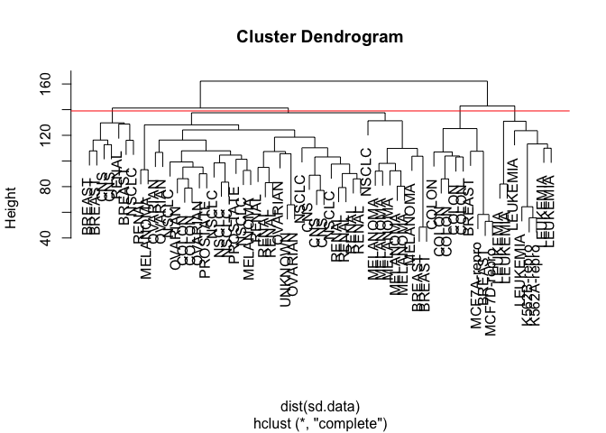
We can get a summary of the result from the return value of hclust().
hc.out
##
## Call:
## hclust(d = dist(sd.data))
##
## Cluster method : complete
## Distance : euclidean
## Number of objects: 64
For clustering the cancer types in four groups with K-means, we simply run kmeans() with K = 4.
set.seed(2)
km.out <- kmeans(sd.data, 4, nstart = 20)
km.clusters <- km.out$cluster
table(km.clusters, hc.clusters)
## hc.clusters
## km.clusters 1 2 3 4
## 1 11 0 0 9
## 2 0 0 8 0
## 3 9 0 0 0
## 4 20 7 0 0
We can also combine the different algorithms by first running principal component analysis and then performing heirchical clustering on the first few principal components.
hc.out <- hclust(dist(pr.out$x[, 1:5]))
plot(hc.out, labels = nci.labs, main = "Hier. Clust. on First Five Score Vectors ")
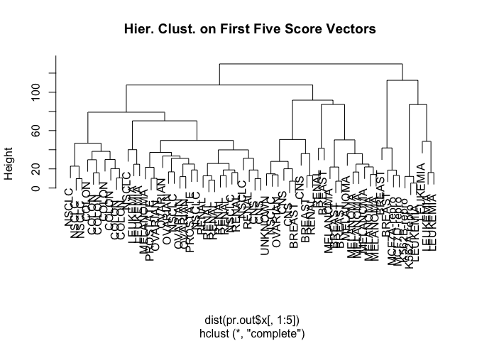
table(cutree(hc.out, 4), nci.labs)
## nci.labs
## BREAST CNS COLON K562A-repro K562B-repro LEUKEMIA MCF7A-repro
## 1 0 2 7 0 0 2 0
## 2 5 3 0 0 0 0 0
## 3 0 0 0 1 1 4 0
## 4 2 0 0 0 0 0 1
## nci.labs
## MCF7D-repro MELANOMA NSCLC OVARIAN PROSTATE RENAL UNKNOWN
## 1 0 1 8 5 2 7 0
## 2 0 7 1 1 0 2 1
## 3 0 0 0 0 0 0 0
## 4 1 0 0 0 0 0 0